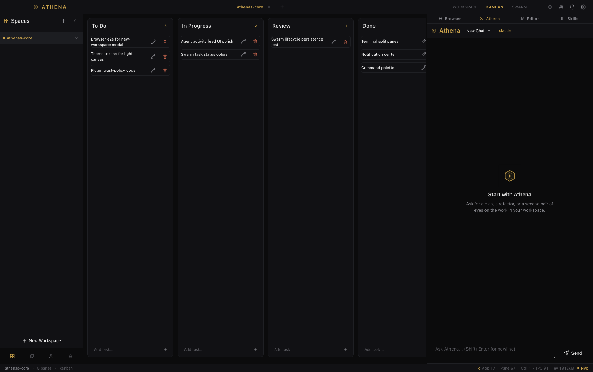
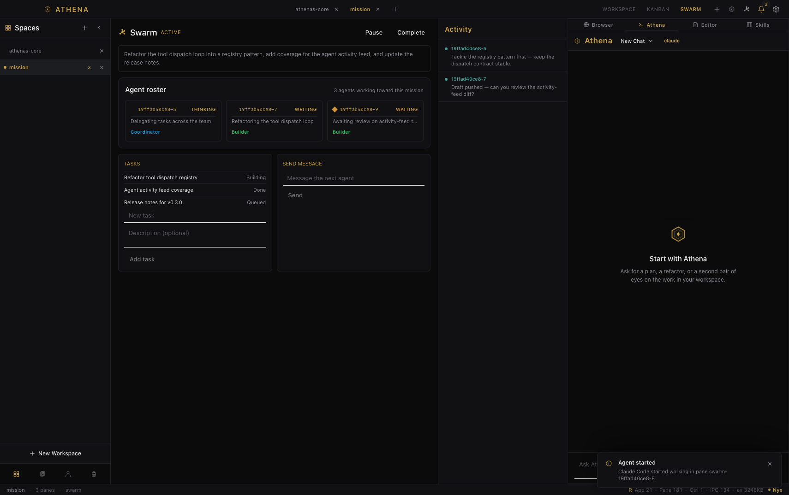

A project home
Keep workspaces, files, sessions, and the next action close at hand.
Native AI development workspace
The terminal, the conversation, the task board, and your agent team in one focused desktop window.

The film
See the flow from a blank workspace to a running team of agents. The film uses real captures from Athena’s Core.
Open the pieces of a project without scattering your attention across five separate apps.
Keep workspaces, files, sessions, and the next action close at hand.

Athena can work from the workspace you are already looking at.

Turn ideas into a board your agents and your team can share.

Launch a coordinated group of agents when the task is bigger than one thread.
Rust and Tauri 2 keep the desktop shell compact and close to the platform.
Terminal output, tasks, agents, and chat share one workspace instead of competing for your attention.
Athena’s Core is in active beta. Test it, break it, and help decide what comes next.
Release notes from the repo. New builds appear here as they ship.
Athena’s Core now sees which AI agents are running inside each pane. A gold dot marks an agent at work, a pulsing gold dot means thinking, amber means finished or waiting on you. Finished, errored, or questioning agents ping you with a macOS notification and a dock badge, so nothing waits unseen.
Also in this build:
Early access
Try the current macOS build, tell us what gets in your way, and follow the project as it grows.
Athena’s Core is free for everyone. If it saves you time, a donation helps keep development going.
BTC, ETH, USDT, USDC. Any chain.
bc1qn8ehwc7rxlpgvljztr5k6npqf307xq00dqatf8
0x4260456e1dbdc880d69d75949726953215a93586
TSBUpAreTjmUscbUbf4L1wkX1fvvJvSRGW
Card or crypto via NowPayments. Any amount helps.
Buy me a coffeeStar the repo, share with friends, report bugs.
Star on GitHub